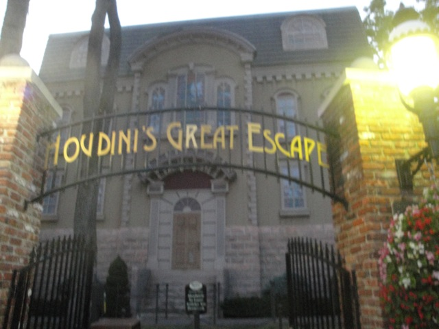
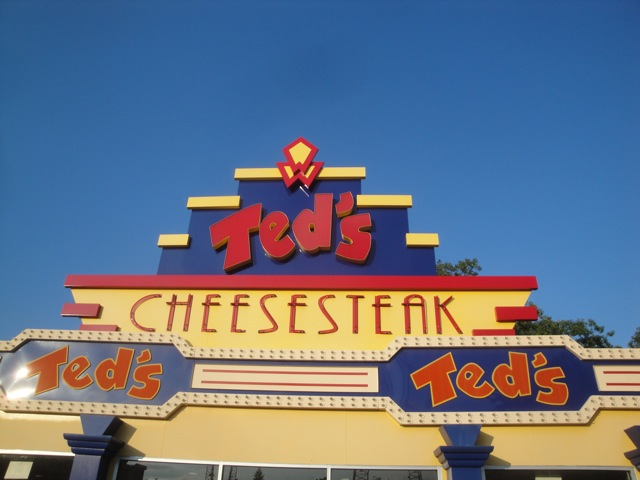

Six Flags Great Adventure is one of the biggest amusement parks in the world with one of the largest roller coaster collections in the world. Yeah, when most people think of mega roller coaster parks, they'll usually think of parks like Cedar Point and Six Flags Magic Mountain, and yes. Both of those are major roller coaster parks, but Six Flags Great Adventure is easily amongst them as far as major roller coasters go. It's got a really big collection. And not only is it big, but it features some really good roller coasters including the best roller coaster we have ever ridden. El Toro. No joke. El Toro is the best roller coaster ever. So yeah. It's an amazing park if you're a die-hard roller coaster enthusiast. You care about nothing but roller coasters. This park will make you wet. But even outside all the big and crazy roller coasters, Six Flags Great Adventure is still a decent park. It's got a nice variety of other stuff including some unique to America stuff such as a Parachute Tower and one of the only Vekoma Mad Houses in the United States. And though a lot of enthusiasts tend to forget about it, there's actually a safari part of the park and though I didn't check it out when I was there, and perhaps best of all. They contain the best operations out of any Six Flags park. Seriously, I can't think of ANY other Six Flags Park that frequently runs 3 trains on their major coasters. And that's during the non-busy times. And the employees their bust their ass to keep the lines moving. And as a former ride operator and a frequent vistor of amusement parks, I REALLY appreciate good operations. So keep up the great work Six Flags Great Adventure.
Here are the reviews of all the Flat Rides at Six Flags Great Adventure. Well, since my last visit, they got their star flat ride. Zumanjaro, which is basically Lex Luthor, only slightly taller, making it now the tallest drop tower in the world. Having been on Lex Luthor, I'm guessing that Zumanjaro is pretty similar, with using the look down trick, it almost certainly becomes a great freefall experience. Hell, I hear that you can actually see Philadelphia on clear days. Ok, that's just cool. The only problem is that Kingda Ka and Zumanjaro can't run at the same time. MOTHERF*CKER!!!! Well, this certainly screwed up the good operations I was talking about earlier at Six Flags Great Adventure. Though to be fair, this isn't Six Flag's fault as its required by the state of New Jersey. *Sigh* Oh Chris Christie. How I HATE you, you bloated pathetic lying corrupt Wall Street Fat Cat sh*thead. I apologize to all the citizens of New Jersey for having this attrocity as their governer. But back to Six Flags Great Adventure and their flat ride collection. Moving on from Zumanjaro, let's go onto their other unique flat ride. Houdini's Great Escape. This is a Vekoma Mad House. Now if you live in Europe or have visited a lot of parks in Europe, you'll quickly find out that these rides are EVERYWHERE in the European Region. However, there are only 2 in the United States, one of which is here at Six Flags Great Adventure. Now if you constantly ride these rides, they definetly grow old. However, for someone riding a Mad House for the first time, these rides are amazing. I know I LOVED them until I rode them constantly when I was in Europe. The only other flat ride they have that's unique is their Parachute Tower. Now maybe it's because I'm a thrill junky, but these things just don't do it for me. Maybe it's because the one here was a sit down ones and the stand up ones were apparently better. They are meant to be family rides, so for someone who's not huge on thrills, this is more of a ride for them. But either way, the Parachute Towers are a dying breed and if you know me, you know that I do love me some unique rides. They also have a Starflyer, a Top Spin, some bumper cars, a pirate ship, a scrambler, some teacups, a round up, and a ferris wheel.

Definetly ride this ride if you haven't been to the European Parks.
Water Rides
I never rode any of the water rides at Six Flags Great Adventure. However, neither their log flume nor their river rapids ride appeared to be anything special when I went. So it appeared that you weren't missing much. Maybe I'm seriously underestimating them, but come on. I highly doubt it and feel that these would be acceptable to skip unless you just gotta cool down.
Water Park
I never went to their water park here for several reasons. First of all, El Toro was calling me. Second of all, I can't think of any really amazing slides there, though I do keep hearing that they had something good as of recently, but what really is stopping me is #3. It's a seperate admission. Yeah, I just don't want to pay seperate for the water park. But if you do, go and tell me how it is.
Dining
Here are the reviews of all the Resteraunts at Six Flags Great Adventure. And I must admit, I was impressed with the dining selection here. Now granted, its still Six Flags food and you aren't gonna see Six Flags Great Adventure popping up on our Top 10 Theme Park Dining List any time soon, but among the Six Flags parks, its easily the best. They had not only the typical amusement park crap, but they also had some chains such as Nathan's Hot Dogs and Ted's Cheesesteaks. Mmm. Cheesesteaks and Nathans *drool*. I really wish more of those chains would come to the other Six Flags parks. Seriously, the only chain at the other parks is Papa Johns, which I'm not a fan of. Now on a downside, they have a special place for a Freestyle Drink, however, when I tried to get one, I couldn't because they would only sell them to people who bought the Souviner Cups. What a stupid f*cking rule. Nobody was buying a freestyle drink. Completely empty. And when someone does want to buy one, oh no. You need a Souviner Cup. Screw you. Well, they still have a good dining option. Which is good, since you can't just head out and eat somewhere else due to its isolated location. =)

More Six Flags parks need Cheese Steaks.
Theming and Other Attractions
Here are the reviews of all the other stuff at Six Flags Great Adventure. As far as theming goes...it's Six Flags. I seriously hope you weren't expecting anything, cause you're certainly not gonna get anything. As for other attractions, it doesn't seem like they have all that much else to do other than roller coasters. Which isn't a bad thing considering their line up. But actually, they do have something else. A safari. Yes, that's right. There's a drive through Safari around Six Flags Great Adventure. And it's actually owned by the park. Not just some random safari near the park. So if you're into animals, then this is awesome news. Otherwise, you'll just have El Toro. Boo-hoo. =)
In Conclusion
Six Flags Great Adventure is a great park to visit if you're into crazy roller coasters. I mean, come on. They have El Toro. One of the greatest roller coasters in the world. But not only that, but they also have Nitro, one of the better B&M Hyper Coasters, Kingda Ka, the tallest and 2nd fastest coaster in the world, among many other really good roller coasters. And yeah. It's mainly a roller coaster park. Yes, they do have the tallest drop tower in the world, a cool safari, and a couple of relatively rare flat rides, but other than that, it's mostly just roller coasters. But even so, it's a shining star in the Six Flags chain with not only a bunch of great rides, but a great atmosphere and great operations to keep the park running as smoothly as possible. So definetly check out Six Flags Great Adventure. It's definetly one of the better parks out there and certainly one of the best of the Six Flags parks.
Enthusiast FAQs.
*Are there kiddy coaster restrictions? - No and No. Blackbeard's Lost Treasure Train and Roadrunner Railway don't have any limits.
Tips
*Get a Gold Flashpass.
*If you can't get a Gold Flashpass, then go to Kingda Ka first since it gets long lines, has bad operations thanks to Zumanjaro, and is one of the more unreliable rides.
*Don't go on a Saturday.
*Wear pants or shorts with zippered pockets to keep your stuff safe.